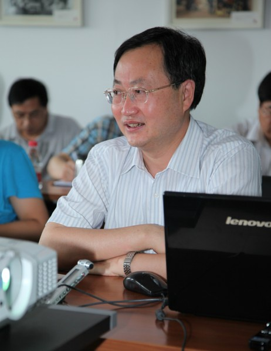
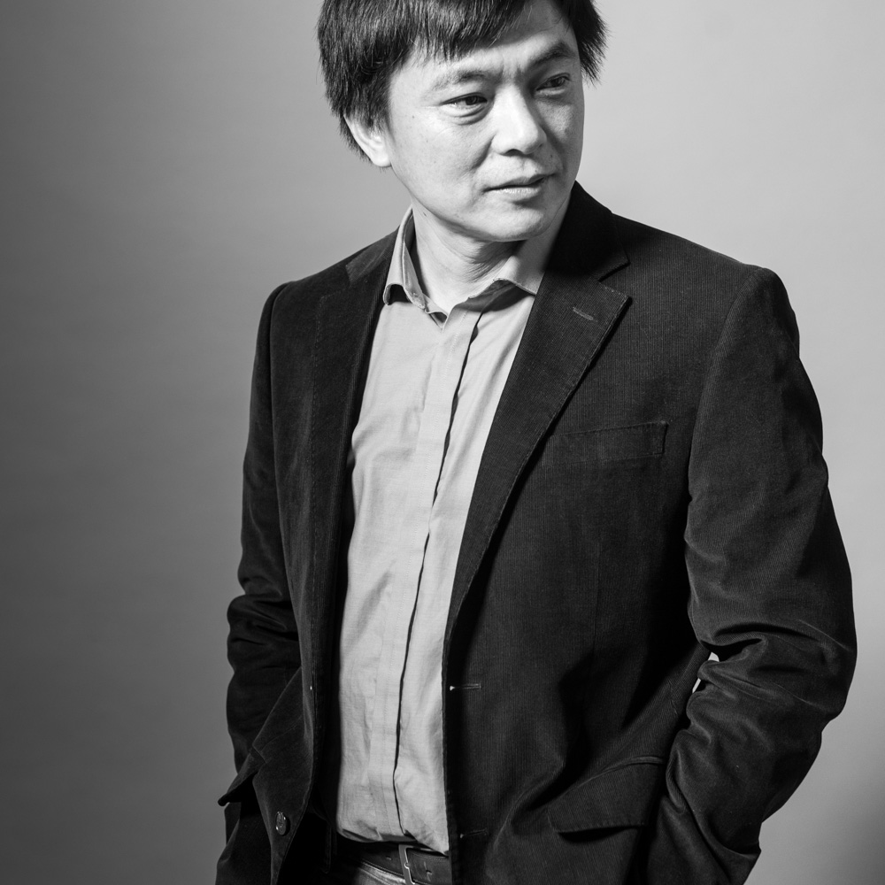

讲席教授
汪晖教授查看学者论著
汪晖（1959年10月－），江苏扬州人，中国大陆著名学者，1966年入扬州市西门街小学，1971年入扬州市鲁迅中学（今扬州大学附属中学）、1976年初高中毕业。1976至1977年间，先后当过一年半的临时工和徒工。1978年录取为扬州师院中文系77级本科生。1985年在南京大学获得硕士学位。1985年考取中国社会科学院研究生院，从唐弢教授攻读博士学位，1988年毕业并获得博士学位。随即进入至中国社会科学院文学研究所工作，先后任助理研究员、副研究员、研究员。1991年与友人共同创办《学人》丛刊，1996年至2007年担任《读书》杂志主编，在其任内，《读书》是国内最有影响力的杂志之一。2002年至今，任清华大学人文学院中文系、历史系教授，2009年起任清华大学人文与社会科学高等研究所所长。

王中忱教授查看学者论著
吉林农安人。1992年毕业于日本大阪外国语学院，1996-1998年任日本国立岩手大学人文社会科学学部副教授，现任清华大学中文系教授、博士生导师、清华大学中文系系主任。中国现代文学研究会理事，《中国现代文学丛刊》编委，《国际理论空间》编委。主要研究方向为比较文学、东亚近现代文学与文化史。著有《越界与想象——20世纪中国、日本文学比较研究》、《走读集—中国与日本之间：文学散札》、论文《蝴蝶缘何飞过大海——殖民历史、殖民都市与<亚>诗人群》等。2001年曾获《世界文学》翻译奖。

沈卫荣教授查看学者论著
1962年4月20日生于江苏无锡。1979年9月—1990年3月就读于南京大学历史系，获学士、硕士学位，并留校任教；1990年3月—1998年6月就读于德国波恩大学中亚语言文化系，获博士学位。历任尼泊尔蓝吡尼国际研究所研究员、哈佛大学印度梵文研究系合作研究员、Macalester学院历史系访问教授、德国洪堡大学中亚系代理教授、日本京都大学文学部外国人共同研究员、日本地球环境研究所客员教授等职。2006年1月—2014年7月，任中国人民大学国学院教授、博士生导师、国学院副院长、宗教高等研究院副院长、西域历史语言研究所所长、汉藏佛学研究中心主任。现为清华大学人文社会科学高等研究所教授、清华大学中文系教授、博士生导师、中国少数民族语言文学专业学科带头人。专门研究领域：西域语文、历史，特别是西藏历史、藏传佛教和汉藏佛学的比较研究。
冯象教授查看学者论著
冯象，上海人。少年负笈云南边疆，从兄弟民族受“再教育”凡九年成材，获北大英美文学硕士，哈佛中古文学博士，耶鲁法律博士。现任北京清华大学梅汝璈法学讲席教授，兼治法律、宗教、伦理和西方语文。著/译有：《贝奥武甫：古英语史诗》（北京三联，1992），《中国知识产权》（英文，Sweet & Maxwell, 1997，增订版2003），《木腿正义》（1999，北大增订版2007），《玻璃岛》（北京三联，2003，第二版2013），《政法笔记》（2004，北大增订版2011），《创世记：传说与译注》（2004，北京三联修订版2012），《摩西五经》（牛津大学，2006，修订版2013），《宽宽信箱与出埃及记》（北京三联，2007，第二版2012），《智慧书》（牛津大学，2008），《新约》（牛津大学，2010），《信与忘：约伯福音及其他》（北京三联，2012），及法学评论、小说诗歌若干。
崔之元教授查看学者论著
崔之元：清华大学公共管理学院教授，博士生导师，清华大学百人计划引进学者。1995年获美国芝加哥大学政治学博士学位，曾任美国麻省理工学院政治学系助理教授（1995-2003）。主要研究领域在政治哲学，政治经济学和法律经济学。著有“看不见的手的范式的悖论”（经济科学出版社），“制度创新与第二次思想解放”（牛津大学出版社）等中英文著作。